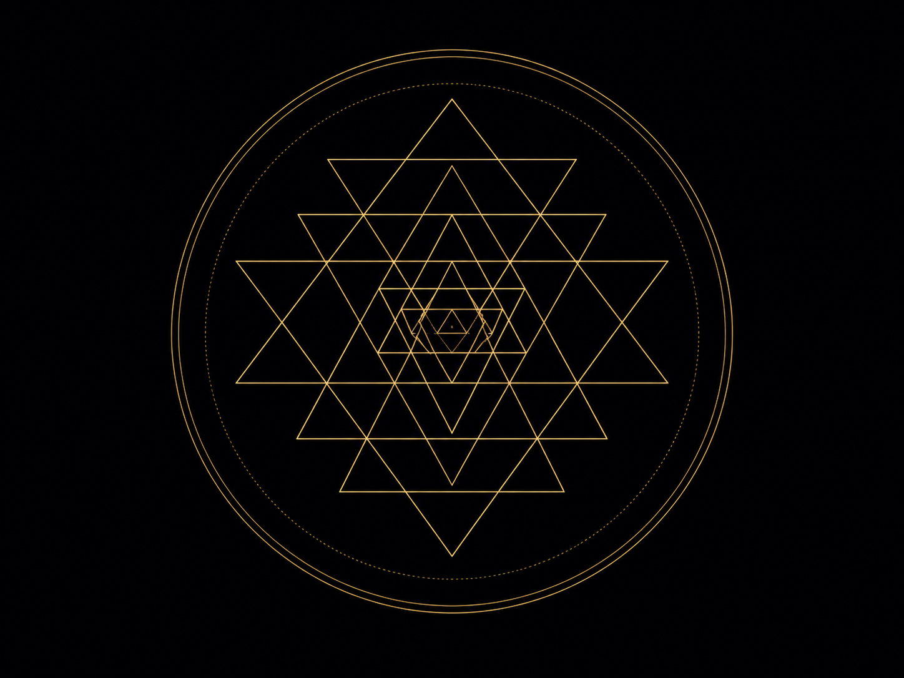

No es un calendario en el sentido que conocemos. No mide el paso del tiempo — lo cualifica. Cada uno de sus 260 días tiene una textura específica, una combinación de signo y número que los pueblos nahuas, originarios del Valle de México, desarrollaron observando ciclos durante siglos.
Los tonalpouhque — los especialistas que lo interpretaban — no decían "naciste en tal día, serás tal cosa". Decían "naciste con esta energía, estos son sus potenciales y sus riesgos, aprende a moverte con ella". La distinción importa.

Este sistema sigue vivo. No como reliquia académica ni como reconstrucción de códices — sino en comunidades k'iche' y kaqchikel de Guatemala donde los ajq'ijab, los guardianes del tiempo, mantienen la cuenta sin interrupciones hasta hoy.
El Tzolkin comparte con el Tonalpohualli la estructura de 260 días, pero emergió de otra tradición, otra lengua, otra cosmología. Que dos culturas sin contacto llegaran a la misma arquitectura temporal dice algo. No sabemos exactamente qué. Pero dice algo.
Te mostramos qué signo y número corresponden a tu nacimiento en este ciclo, y qué dice de ellos la tradición que lo ha custodiado hasta hoy.

Esta tradición llegó a occidente desde Babilonia, pasó por Grecia, fue sistematizada por Ptolomeo en el siglo II, sobrevivió la Edad Media en los textos árabes y volvió a Europa a través de Al-Andalus. Dos mil años de transmisión textual ininterrumpida.
Lo que calcula es la posición de los planetas en el momento exacto del nacimiento, vista desde el lugar exacto donde ocurrió. El ascendente — el punto más sensible de la carta — cambia cada cuatro minutos. La hora importa.
El zodíaco que usa es tropical: referenciado al equinoccio, al ciclo de las estaciones.

Jyotish significa literalmente "ciencia de la luz". Surge de los Vedangas, originarios del subcontinente indio, en la tradición que nos llega desde los textos sánscritos más antiguos, desarrollados a lo largo del segundo milenio antes de nuestra era.
Usa el zodíaco sidéreo: referenciado a las estrellas fijas. Aunque comparte los nombres de los signos con la astrología occidental, las posiciones planetarias difieren porque parten de una geometría distinta. Son preguntas distintas hechas al mismo cielo.
El sistema de dashas — períodos planetarios que determinan qué energía predomina en cada etapa de la vida — no tiene equivalente directo en ningún otro sistema de esta herramienta.